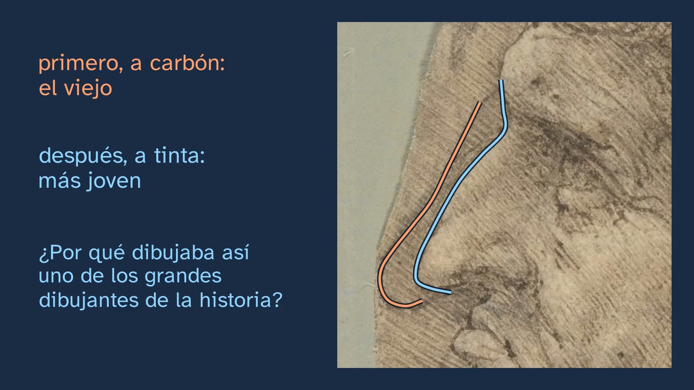
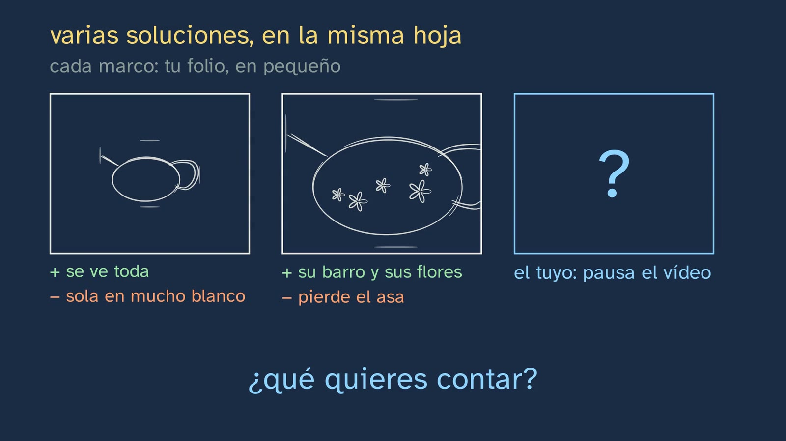

The sketch: thinking by drawing
In a nutshell
This is a theory class, with Marina at her desk, with a workshop inside it. Classes 2 and 3 taught how to measure and how to block in; this one teaches how a drawing begins, and why the great masters began by feeling their way. It answers one question: why did they draw like that, and what is a sketch?
It opens with the solutions to class 3 and with a hook from the Met: around 1490–1494, Leonardo began the exaggerated profile of an old man in charcoal and, when he went over it with the pen, turned him into a younger man. The magnifier shows the two noses, the charcoal one and the ink one. Before any explanation, students draw what is on their desk for one minute, however it comes out, and keep it.
The words. The Spanish word for sketch, boceto, comes from the Italian bozzetto, from bozza, unhewn stone. A sketch is the first idea of the whole work, made quickly so that it can be changed. It is told apart from the life sketch, the study and the pentimento by what it is for: the sketch looks for the work, the life sketch keeps what you saw and the study learns one part. And Vasari, in the mid-sixteenth century: they are made «per tentare l'animo di quel che gli sovviene» (to try out whatever comes to mind).
The reason, in Leonardo's words (Trattato della pittura, § 185): nothing should be finished at the start, because what is finished is painful to move; you must compose roughly, like poets who cross out their verses, and attend to the movements of the figures fitting what they feel before their beauty. Hence the typical mistake: a sketch is not a badly finished drawing. A badly finished drawing wanted to be the work; a sketch wants to find it.
How do we know? From their drawings, as described by their museums: four Virgins by Leonardo on a single sheet of silverpoint, which cannot be erased (Met); the first pose of Dürer's bull, with its mouth open (Art Institute of Chicago); and the repeated outlines of Raphael's babies, which are movement (Cleveland). Why it works: Leonardo asked for a notebook always at hand, never erased, because memory cannot hold so many forms (Raphael's pink sketchbook, Goya's eight albums); and psychology has measured another limit that points the same way: while you think, your head holds very few shapes at once. Paper holds them all.
The method, in a complete example on the earthenware teapot from class 3: where it goes and how much room it takes (four small dashes), the big shape with light lines and no eraser, the check and the good line reinforced, and the details at the end. Then come several solutions (three frames with the shape of the sheet, two by the board and one by the student), the typical mistakes looked for in the student's own first try, three exercises and the open question.
Objective. By the end, students will be able to tell a sketch, a life sketch and a study apart, make a sketch from life from the general to the particular, and read in the masters' drawings how they thought with the pencil.
Curriculum
Spain's Royal Decree 243/2022, annex II, Artistic Drawing, a compulsory subject in the first year of Bachillerato in the Visual Arts, Image and Design pathway. Quotations checked in the BOE's consolidated text. Our translation of the official Spanish text.
| Element | What the decree says | Where the class works on it |
|---|---|---|
| Basic knowledge (block A, "Concept and history of drawing") | "Drawing as an interactive process of observation, reflection, imagination, representation and communication." | The two noses (1:41), masters who hesitate (5:30–7:26) and an extra memory: drawing is thinking (7:31–8:42) |
| Basic knowledge (block B, "Graphic expression and its basic resources") | "The sketch or rough sketch. Introduction to blocking in." | The words of the trade (2:47) and the method (8:42–10:14), with blocking in inside the sketch (9:38) |
| Specific competence 1 | "Understand drawing as a form of knowledge, communication and expression, comparing the use made of it in cultural and artistic manifestations of different periods…" | Drawings by Leonardo, Dürer, Raphael and Goya, from 1480 to 1820, and what they made them for |
| Specific competence 3, description | "making sketches from detailed observation of reality" | The teapot, step by step, and the three sketches of an object from home |
| Specific competence 8, description | "When drawing from life, one must observe, analyse and retain the information to be transferred to the drawing" | The limit of working memory, and the notebook that extends it (7:31–8:42) |
| Criterion 1.1 | "Identify drawing as a form of knowledge, communication and expression, reflecting on one's own initiative on its presence in different cultural and artistic manifestations…" | Reading in the masters' drawings how they thought (5:30–7:26) and exercise 3 (Watteau) |
| Criterion 3.2 | "Analyse, interpret and represent reality graphically through sketches and rough sketches, using the appropriate tools and developing a personal, spontaneous and creative expression." | The method (8:42), the three frames (10:14) and exercise 1 |
What to bring. From class 3, the earthenware teapot and the idea of the big things first (0:19); from classes 2 and 3, measuring height against width with the pencil, used here to check (9:38).
What Andalusia and Madrid ask for. With the same wording, next to the sketch: "Artists' sketchbooks: Leonardo da Vinci, Goya, Van Gogh, Picasso, Andy Warhol, Frida Kahlo". The class shows Leonardo's (what he asked for, and his sheets), Raphael's pink sketchbook and a page from one of Goya's albums. The works of Picasso, Warhol and Kahlo are still protected in Spain, and the channel does not show them.
How the class is built
Video chapters
Just over thirteen minutes, in fourteen chapters. It is a concept class with a workshop inside: students draw a first try before any explanation, follow the method with the teapot if they like, complete the third frame with the video paused and, at the end, look for the mistakes in their own first try. The part on the masters uses an uncut magnifier over each sheet, with its label to one side; each hesitation is pointed out on the drawing when the voice names it.
| Chapter | What happens | Why like this |
|---|---|---|
| What we'll see | Marina introduces the class. The map of the topic and what you need: a pencil, a sheet of paper and something from your desk (0:04). | The map, in every class. |
| What you already know | What did you draw first on the teapot, and why? (0:19, pause). Its body: the big things first; today, a method (0:29). | Recalling class 3, which today becomes a method. |
| The solutions | The three exercises from class 3, each with its image: the solids (0:41), the gaps in the chair and the triangle at the front of the bike frame (1:03), and the solids of Revere's teapot (1:21). | Solutions open the next class, briefly. |
| Two noses | Leonardo's profile, with its label and its size (1:41); the magnifier on the two noses (2:10); the question of the class. Marina (2:30). | The hook, with its context: when, where and who. |
| Your first try | One minute, with the video paused: draw what is on the desk, however it comes out, and keep it (2:33). | The problem before the explanation; it comes back with the mistakes. |
| The words of the trade | Sketch, from bozza (2:47); life sketch, study and pentimento, each with an example (3:15); told apart by what they are for (3:38); Vasari, in his Italian (3:55). | Precision, and the fact that sources don't agree. |
| What Leonardo wrote | Why not finish each part properly? (4:08, pause). § 185, in Italian and translated, on the 1890 page (4:22); poets who cross out and «componi grossamente» (4:45). The typical mistake: a badly finished drawing next to the sketch and the draft of a poem (5:11). | The reason, from the source; the mistake next to the right answer. |
| Masters who hesitate | "The painter who has no doubts achieves little" and Leonardo's Virgins, counted (5:30); silverpoint (5:54); Dürer's bull: how was its mouth? (6:18, pause) and its first pose (6:41); Raphael's babies: why several outlines? (6:56); movement (7:14). Marina, halfway (7:26). | How do we know? From the drawings and what their museums say. |
| An extra memory | Raphael's pink sketchbook at actual size and what Leonardo asked for (7:31); Goya's eight albums (8:01); the limit of working memory: a fifth shape comes in and another fades (8:13). | Why it works, with what has been measured and without forcing the comparison. |
| How to make a sketch | No eraser (8:42); step 1, the four small dashes (8:56); step 2, the big shape with light lines (9:18); step 3, check and reinforce (9:38); step 4, the details, and the pentimenti that remain (9:56). | The complete example, one step per board, on a teapot they already know. |
| Several solutions | Three frames with the shape of the sheet: two by the board, with what each gains and loses (10:14); the third, by the student, with the video paused; three almost identical ones are a single idea (10:47). | The half-done example, and choosing with reasons. |
| Typical mistakes | The three mistakes, on a badly solved mug (11:17); students look for them in their first try (11:48, pause). | The mistake in plain sight, in their own drawing. |
| Practice | Three exercises, each with its image (11:59). | Practice with an object of their own and with museum drawings. |
| Keep thinking | The open question, next to the two noses (12:47); the next class (13:03). Marina says goodbye (13:11). | The question the class leaves. |
Bridges with other subjects. Language: the draft of a text, crossed out to think better (Leonardo's poets). Psychology and Biology: visual working memory. History and Art History: the notebook as a document; Leonardo, Dürer, Raphael and Goya.

A plan for a 50-minute lesson
Designed to be watched in class with a projector, with paper, pencils and one object per person (a mug, a bottle or a pencil case). Erasers are put away at the start. If the video is watched at home, the lesson can be devoted to the activity.
| Minutes | What is done |
|---|---|
| 0–3 | Video up to "Your first try" (0:00–2:33). |
| 3–5 | Pause at (2:33): the first try, one minute, however it comes out. Everyone keeps it. |
| 5–12 | Video up to "How to make a sketch" (2:33–8:42). Stop at (4:08) and at (6:18) to answer aloud before hearing the answer. |
| 12–19 | Video up to "Practice" (8:42–11:59). Whoever wants to draws the teapot at the same time, with the photo projected. Stop at (10:47), two minutes for the third frame, and at (11:48), one minute to look for the mistakes in the first try. |
| 19–21 | Video to the end (11:59–13:18). |
| 21–47 | The activity: "Three solutions, no eraser". |
| 47–50 | The open question, for the video's comments or for the next class. |
Typical mistakes and how they are handled
With the usual warning: none of them has been measured with Spanish Bachillerato students. They are the ones described by manuals and reference teachers, and the ones the class makes visible in the student's first try.
- Believing a sketch is a badly finished drawing (5:11). The root of the others: whoever believes it wants the work to come out at the first attempt. It is handled with the video's comparison: the badly finished drawing wanted to be the work; the sketch wants to find it, like the draft of a text. And with the masters: if Leonardo, Dürer and Raphael hesitated on paper, hesitating is not for beginners only.
- Starting with a detail (11:17). The rest comes out whatever size it happens to be, and doesn't fit. In the video's mug, the huge handle leaves the body cut off by the edge. It is corrected with step 1: the four small dashes, before any shape.
- Pressing hard from the first line (11:17). A dark line can't be moved, and forces you to erase. It is corrected with step 2: light lines, holding the pencil far from the tip (9:18).
- Erasing everything that goes wrong (11:17). What was learned is lost: the bad line tells you where the good one isn't. That is why the class puts the eraser away (8:42), and the pentimenti can be seen on the teapot at the end (9:56).
- Telling a sketch, a life sketch and a study apart by their look. The three words are separated by what they are for, not by how quick or careful they are (3:38). Sources don't fully agree (the Spanish Academy's dictionary calls a study a "preparatory sketch"), and the same drawing can be two things. Exercise 2 practises it with three drawings and what their museum says.
- Three almost identical solutions (10:47). They are a single idea. Ask for a real change in size, position, crop or viewpoint.

Questions and solutions
Stop and think (inside the video)
- When you blocked in the earthenware teapot, what did you draw first, and why? (0:19). Its body: the big things first, measured, and the details (the flowers, the spout, the handle) at the end.
- Why did one of the great draughtsmen in history draw like that? (2:10). It is the question of the class, and it is answered throughout the video: because a sketch is a way of thinking, in which whatever doesn't work is changed without erasing.
- Why not finish each part properly, from the first line? (4:08). Leonardo, § 185: because what is finished is painful to move, even if it is in the wrong place («gli parrà cosa ingiuriosa a trasmutare esse membra»); and because what comes first is that the whole figure works (that its movements fit what it feels), not the beauty of each part. Student answers that count: "if it's finished, you won't change it", "first it has to be in the right place", "you waste time on something that may not work".
- In his first idea, how was the mouth of Dürer's bull? (6:18). Open. The museum says so: some sketchy lines around the hind foot, the back, the muzzle and the horns "reveal" that the artist first drew the animal in a slightly different position, with its mouth open. The magnifier traces the jaw, the lip and the snout of the first mouth.
- Raphael's babies: why several outlines? (6:56). Because the child won't keep still. It is Cleveland's explanation: the drawing relays its movement "with repeated contour lines". A repeated line is not a mistake: it is movement.
- Did you start with a detail? Did you press hard from the first line? Did you erase? (11:48). Each student, in their first try. All three are likely to turn up; if someone has none, they can tell how they started.
The three frames (10:47). There is no single answer. What is checked: that the three frames have the shape of the sheet; that the third is really different from the board's two (another size, another position, another crop or another viewpoint); that it only has the first two steps (the dashes and the big shape); and that the choice comes with a reason about what you want to tell (the whole teapot, or its clay and its flowers).
Practice (solutions at the start of class 5)
- Three two-minute sketches of the same object, from three places, on the same sheet and without an eraser; choose the best one and write why. Each student has their own. What is checked: three viewpoints that can be told apart (from the front, from the side, from above); in each one, the four dashes and the big shape before the detail; light lines, with the corrected ones visible; and a reason for the choice, not "the one that came out prettiest".
- Sketch, life sketch or study? A, Ribot: life sketch (he drew it from life, from what was around him, and it doesn't prepare any work: it keeps what he saw). B, Morisot: sketch (with this watercolour she worked out the composition of a painting, the whole scene; in the painting she added her daughter Julie and cropped more tightly: the sketch served to change things). C, Boilly: study (two separate figures, with the light on their suits carefully worked, which later went into his painting A Game of Billiards: it prepares one part; the museum's full title confirms it, Two Standing Figures (Study for A Game of Billiards), which is why the board shows it without its subtitle). Accept a student calling Ribot's cat, seen from three sides, a study if they argue it: the same drawing can be two things at once.
- Watteau's pentimenti. In the dancer on the right, the face is drawn twice: once turned more towards us, with the eye, the mouth and the chin closer to the ear; and once more in profile, further to the right, with the nose, the lips and the chin further out. Watteau changed how far the head turns. The museum speaks of the pentimenti "in the woman's face" without saying in which of the two figures, or which of the two faces came first; they can be seen, without a magnifier, in the one on the right.
Keep thinking. If pentimenti show how the artist was thinking, should they also be left visible in a finished drawing? There is no single answer. Clues for the debate: in an oil painting, the painter covered them, and the Getty thesaurus defines them as what shows when areas that were painted over become visible; in a silverpoint drawing they couldn't be covered; the Art Institute of Chicago sees in Watteau's "the spontaneity of the artist's method". One possible reading, to be discussed: it depends on what the drawing is for. A plan or an illustration in a science book needs clarity; an artist's drawing may want to show how it was made as well.

A classroom activity
Three solutions, no eraser (about 26 minutes, in pairs; it works on block B, competences 3 and 8 and criterion 3.2).
Materials: an object with character in the middle of the room, in sight of everyone (a coffee pot, a watering can, a chair or a backpack); paper and a soft pencil. Erasers are collected at the start.
- Three frames (2 minutes). Everyone draws on their sheet three frames of about 5 cm, with the shape of the sheet.
- Three solutions (9 minutes, three per frame). In each frame, a different way of placing the object: whole and small, large and cropped, or from another place. Only the first two steps: the four dashes and the big shape, with light lines.
- Choosing with reasons (3 minutes). Everyone gives their sheet to their partner, who chooses one of the three and writes, in one line, what it tells better than the others.
- The large sketch (9 minutes). The chosen one, large, with the four steps. The lines that didn't work stay.
- Together (3 minutes). Where are your pentimenti? What do they tell you about how you thought the drawing? Did anyone make three almost identical frames?
For teachers: what they will find. There are no studies that say how much a Bachillerato drawing improves by trying several solutions first, so no result can be announced. It is to be expected that the first three will look alike (the class warns: three almost identical ones are a single idea) and that many will find it hard not to press hard without an eraser at hand. If the activity works for you, tell us in the Ágora, in this class's thread.
For the classroom. The drawings belong to each student: they are not uploaded anywhere, and the first try is not graded.

Open resources: works, texts and tools
All links opened and checked on 23/11/2026 (the Met's, through its API; its website does not answer programs).
| Resource | What it covers | How to use it in class |
|---|---|---|
| The Met's Open Access: Leonardo's head (10.45.1), his Virgins (17.142.1) and the page from Goya's album (35.103.47) | The video's three drawings, in high resolution and under a CC0 licence | Project them with zoom and look for more pentimenti than the class shows |
| Cleveland's Open Access: Raphael (1978.37), and the three in exercise 2: Ribot, Morisot and Boilly | The pink sketchbook and metalpoint; sketch, life sketch and study, with the museum's description | For exercise 2: read with the group what the museum says about each |
| Art Institute of Chicago: Dürer's bull (1965.408) and Watteau's studies (2002.100) | Two drawings with their pentimenti described by the museum, in the public domain | For exercise 3, and to look for the lines on the bull's back that the class doesn't trace |
| Leonardo, Trattato della pittura, Rome edition, 1890 (Internet Archive) | §§ 59, 169, 175 and 185, quoted in the class (pp. 38, 71, 73 and 74–75) | Read § 185 in full with the group and compare it with the quotation in the video |
| Vasari, Le Vite, 1568, "Della Pittura", ch. XVI, and 1550 (Wikisource) | The schizzi and what they are for, in Italian | For teachers, or for students of Italian |
| Fundación Goya en Aragón and University of Zaragoza, "Albums" | Goya's eight albums, from A (1796) to H (1824–1828) | For topic 8, or to choose a page and sketch it |
| The Met, "Metalpoint" (Perspectives, 2020) | How to draw with metalpoint, with the sheet of Virgins as an example | To explain why it couldn't be erased |
Notes for teachers
- The two noses. The Met says that Leonardo began "the grotesque aquiline profile of an old man" in charcoal or soft black chalk, and transformed it in pen "to portray a younger man": a mature man with a noble profile, not a young one. The sheet (11.7 × 5.2 cm) is a fragment that may have been cut from a page of his notebooks. Measured on the image (
calculos.py), the black-chalk nose reaches further forward and lower than the ink one; the two lines the board traces lie entirely on a stroke of the drawing. - The words, in the sources. The Spanish Academy's dictionary (DLE) defines boceto as "a general project or note made before carrying out a work of art"; apunte, as "a quick drawing taken from life"; estudio, as "a preparatory sketch for a painting or sculpture"; and arrepentimiento (in painting), as "an amendment or correction that can be seen in the composition and drawing of pictures and paintings". Pentimento is not in the DLE: it is the museums' word. The Getty thesaurus gives boceto and esbozo as the Spanish terms for sketches. The video's definition of a sketch ("the first idea of the whole work, made quickly so that it can be changed") is the workshop's own division, based on the DLE and on Vasari («il primo componimento dell'opra», «una sola bozza del tutto»), and the class says sources don't always separate them in the same way.
- What Leonardo wrote. The Treatise on Painting was compiled from his notes by his pupil Francesco Melzi around 1540 (Codex Urbinas lat. 1270). The numbering of the paragraphs changes with the edition: the class quotes the Rome edition of 1890, and its caption says so (in Ludwig's of 1882, § 185 is 189 and § 169 is 173). The quotation from § 185 is faithful and complete in what matters, including the reason («gli parrà cosa ingiuriosa a trasmutare esse membra»). Summing it up as "attend first to movement" cuts it short: Leonardo asks for the movements to fit «agli accidenti mentali», what the figures feel, before the beauty of their limbs. The sentence in § 59, «Quel pittore che non dubita, poco acquista», is literal.
- The notebook. In § 169, Leonardo asks for a small book always at hand, «di carte tinte, acciò non l'abbia a scancellare», because «la memoria non è capace a ritenerle»; in § 175, «un libretto di carte ingessate» with «lo stile d'argento». That is exactly what Raphael's pink sketchbook is: ten sheets of similar size, of paper prepared in pink, for metalpoint (Cleveland).
- Silverpoint can't be erased. The Cleveland Museum of Art ("impossible to erase or efface") and the Encyclopaedia Britannica say so. That is why Leonardo's Virgins sit side by side: there are at least four, counted on the image, and a fifth only begun at the left edge.
- The bull's date. "1508" can be read on Dürer's sheet. The Art Institute of Chicago dates it around 1496 and says that date was inscribed by another hand, in error; the board labels it. According to the museum, the lines of the first pose are around the hind foot, the back, the muzzle and the horns; the one on the back is so faint that the board doesn't show it.
- Goya. He filled eight albums over about thirty years (Cleveland Museum of Art, 1995.15; Fundación Goya en Aragón: from A, of 1796, to H, of 1824–1828). The page in the video is page 89 of album F, in brush with brown washes and traces of black chalk (Met).
- Visual working memory. Cowan (2001) puts the limit of short-term memory at about four items; Luck and Vogel (2013), at three or four simple objects, fewer if they are complex, and with large differences between people. They are two reviews, not small studies. Luck and Vogel separate it from long-term memory, which is the one Leonardo was talking about: that is why the class calls it "another limit, which points the same way", without making them the same thing. That a sketch is "an extra memory" is the class's explanation, supported by both.
- The pencil held far from the tip. It is a craft tip: with the pencil held far from the tip and without pressing, the line comes out lighter and detail is harder, which is what you want at the start (D. DeRoche, Drawing is Seeing, Open Oregon, 2022, ch. 3).
- The teapot. It is the one by Arij de Milde (Delft, 1671–1708, Met 50.211.37a, b) from class 3. Whole, from spout to handle, it is 1.49 times wider than it is tall (measured on the photo,
calculos.py): the board rounds it to 1.5.

What the class leaves out, and why
- The sketchbooks of Van Gogh, Picasso, Warhol and Kahlo named by Andalusia and Madrid. The works of the last three are protected in Spain; Van Gogh's, which are free, are left out because the class already shows four masters and an album by Goya.
- The history of paper and of the notebook. Why cheap paper changed drawing, and Goya, the album nobody commissioned, belong to topic 8.
- Techniques. Metalpoint, Watteau's red chalk and Goya's wash appear here as what they are; how they are used, in topic 3.
- Drawing from memory. Leonardo's notebook announces it; Lecoq de Boisbaudran's method, and the "drawing effect" (drawing something helps you remember it), belong to class 5.
- Composition. The three frames touch on framing; composition as a method, with its laws, belongs to topic 5.
Sources
Curriculum
- Royal Decree 243/2022, annex II, Artistic Drawing, consolidated text (BOE): https://www.boe.es/buscar/act.php?id=BOE-A-2022-5521.
- Andalusia, Order of 30 May 2023 (BOJA 104), and Community of Madrid, Decree 64/2022 (BOCM 176), Artistic Drawing I.
The texts
- Leonardo da Vinci, Trattato della pittura, Rome edition, 1890, § 59 (p. 38), § 169 (p. 71), § 175 (p. 73) and § 185 (pp. 74–75): https://archive.org/details/trattatodellapit00leon_0; Manzi edition, Rome, 1817: https://archive.org/details/trattatopittura01leon; H. Ludwig edition, Vienna, 1882: https://archive.org/details/dasbuchvondermal01leonuoft.
- Giorgio Vasari, Le Vite, 1550, ch. 16: https://it.wikisource.org/wiki/Le_vite_de%27_pi%C3%B9_eccellenti_pittori,_scultori_e_architettori_(1550)/Capitolo_16; and 1568, "Della Pittura", ch. XVI: https://it.wikisource.org/wiki/Le_vite_de%27_pi%C3%B9_eccellenti_pittori,_scultori_e_architettori_(1568)/Pittura.
- Real Academia Española, Diccionario de la lengua española: boceto, esbozo, bosquejo, apunte, estudio, arrepentimiento: https://dle.rae.es.
- Getty Research Institute, Art & Architecture Thesaurus: sketches (300015617), studies (300081053), pentimenti (300189805): https://vocab.getty.edu/page/aat/300189805.
- D. DeRoche (2022), Drawing is Seeing, Open Oregon Educational Resources, ch. 3: https://openoregon.pressbooks.pub/drawing/?p=139.
Memory
- N. Cowan (2001), The magical number 4 in short-term memory, Behavioral and Brain Sciences 24(1), 87–114: https://pubmed.ncbi.nlm.nih.gov/11515286/.
- S. J. Luck and E. K. Vogel (2013), Visual working memory capacity, Trends in Cognitive Sciences 17(8), 391–400: https://pmc.ncbi.nlm.nih.gov/articles/PMC3729738/.
The works
- Leonardo da Vinci, Head of a Man in Profile Facing to the Left, 1490–1494, pen and brown ink over soft black chalk, The Metropolitan Museum of Art, 10.45.1 (CC0): https://www.metmuseum.org/art/collection/search/339116.
- Leonardo da Vinci, Compositional Sketches for the Virgin Adoring the Christ Child, with and without the Infant St. John the Baptist, 1480–1485, silverpoint reworked in pen on pink prepared paper, Met 17.142.1 (CC0): https://www.metmuseum.org/art/collection/search/337494.
- Albrecht Dürer, Young Bull, about 1496, Art Institute of Chicago, 1965.408 (public domain; the image, from Wikimedia Commons): https://www.artic.edu/artworks/23506/young-bull.
- Raphael, Studies of a Seated Female, Child's Head, and Three Studies of a Baby, about 1507–1508, metalpoint, Cleveland Museum of Art, 1978.37 (CC0): https://www.clevelandart.org/art/1978.37.
- Goya, A country dance, page 89 of album F, about 1812–1820, Met 35.103.47 (CC0): https://www.metmuseum.org/art/collection/search/334047; the eight albums: Cleveland Museum of Art, 1995.15 (https://www.clevelandart.org/art/1995.15) and Fundación Goya en Aragón (https://goya.unizar.es/InfoGoya/Work/Albumes.html).
- Exercise 2: Théodule Ribot, Cats, Cleveland 2010.285; Berthe Morisot, Sewing near the Window, about 1885, Cleveland 2025.209; Louis-Léopold Boilly, Two Standing Figures (Study for A Game of Billiards), about 1807, Cleveland 2008.382 (all three, CC0).
- Exercise 3: Antoine Watteau, Two Studies of a Dancer, Raising Her Skirt in Her Two Hands, 1712–1713, red chalk, Art Institute of Chicago, 2002.100 (public domain): https://www.artic.edu/artworks/158393.
- Those from class 3: Arij de Milde, teapot, Delft, 1671–1708, Met 50.211.37a, b; Paul Revere Jr., teapot, about 1782, Met 69.147; Shaker chair, Met 66.10.5 (CC0).
The life sketch at the bus stop, the finished figure, the draft of the poem, the badly solved mug, the unhewn stone and the stylus are the channel's illustrations, made with AI (ImageGen): the badly solved mug and the finished figure are invented examples, and the class says so. The lines traced over the drawings by Leonardo and Dürer were measured on the image, and each one lies on a stroke of the drawing (clases/dibujo-artistico-i-t01-c4/calculos.py).
About this class
GinCol Lab is a free science channel for curious minds. Marina is an illustrated character, not a real person, and her voice is synthetic: computer-generated with Microsoft Azure AI Speech and not imitating any known person. The script and this sheet are written by an AI (Claude, by Anthropic); the script was reviewed by an independent agent with the channel's rubric, and another agent checked its data; a person reviews everything before it is published. Every fact is checked in two sources or in the original, and every calculation by running it. This English version was translated by the same AI and reviewed by a person. If you spot a mistake, tell us: learning also means correcting.
This sheet is published under a Creative Commons Attribution 4.0 licence: you can copy it, adapt it and use it in your classroom, crediting GinCol Lab. The images come from the video's board, drawn by the channel (the illustrations, with AI); the works are public-domain photos. The quotations belong to their authors, translated by the channel.
How to cite this sheet
GinCol Lab (2026). The sketch: thinking by drawing. GinCol Lab teacher sheet: Artistic Drawing I · 1st year of Bachillerato · Topic 1: Learning to look · Class 4 of 5. https://gincollab.github.io/aula/en/dibujo-artistico-i/t01-c4/. CC BY 4.0.
GinCol Lab teacher sheet · CC BY 4.0 · Source and errata